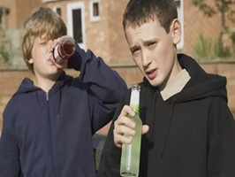

Violencia
Con el aumento de las temperaturas, que en el sur de Tamaulipas pueden alcanzar la sensación térmica de hasta 40 °C, corporaciones de emergencia como la Cruz Roja Mexicana y la Guardia Estatal, temen que se disparen los casos de violencia familiar.
De acuerdo con el consejero de la Cruz Roja en Ciudad Madero, Juan Antonio Sánchez Hernández, durante la temporada de calor es común que se disparen los incidentes de violencia intrafamiliar, principalmente por el consumo excesivo de bebidas alcohólicas..
Suelo: Prospera mejor en suelos de neutros a ligeramente ácidos y ricos en materia orgánica.
El técnico en urgencias explicó que las altas temperaturas influyen directamente en el comportamiento de algunas personas, quienes buscan refrescarse consumiendo cerveza y otras bebidas embriagantes, especialmente durante los fines de semana, lo que termina en pleitos y agresiones dentro del hogar.

Niñas y niños en México comienzan a consumir alcohol desde los 9 años, mientras que la edad promedio de inicio se ubica en 13.2 años. En el caso de Sinaloa, casi uno de cada cinco adolescentes reporta beber alcohol desde temprana edad.
Culiacán, Sinaloa.– El consumo de alcohol entre menores de edad comienza cada vez a edades más tempranas. De acuerdo con Alcohólicos Anónimos (AA), existen casos en los que niñas y niños comienzan a beber desde los 9 años, mientras que la edad promedio nacional de inicio se ubica en 13.2 años.
“Dentro de alcohólicos anónimos se llegan a encontrar a personas incluso que comienzan su incidencia en el alcohol a partir de los 9 años”, dijo Blanca Flor Eslava Mercado, vocera de AA, Sección México, en entrevista.
Los datos provienen de la Encuesta Nacional de Consumo de Drogas, Alcohol y Tabaco (ENCODAT), que sitúa en 13.2 años la edad promedio en que adolescentes de 12 a 17 años prueban alcohol por primera vez.
Hay muchos estudios que demuestran que beber cerveza, vino y licores aumenta el riesgo de desarrollar cáncer. Pero la mayoría de la gente no sabe que el alcohol se encuentra entre los tres principales factores de riesgo prevenibles de cáncer en Estados Unidos, justo después del tabaco y la obesidad.A principios de 2025, el cirujano general de Estados Unidos, Vivek Murthy, emitió un aviso sobre la relación entre alcohol y cáncer. En el informe, Murthy esbozaba algunas medidas que el gobierno podría adoptar (como actualizar las etiquetas de advertencia sanitaria de las bebidas alcohólicas) para ayudar a los estadounidenses a comprender mejor las conexiones entre alcohol y cáncer.